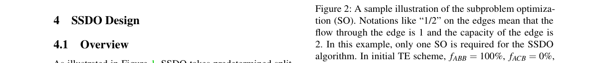
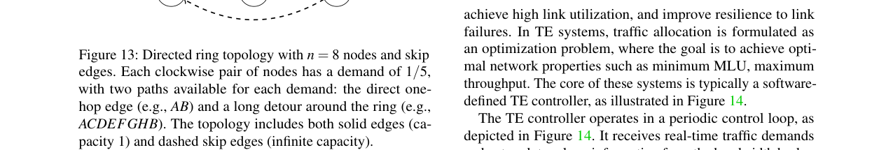

A Fast Solver-Free Algorithm for Traffic Engineering in Large-Scale Data Center Network
总结
随着数据中心网络（DCN）规模迅速扩展至数百节点和数万条边，大规模流量工程（TE）面临严峻的实时计算挑战。现有加速方法依赖商业求解器或深度学习，在可扩展性方面存在固有瓶颈，难以兼顾求解质量与计算效率。
As-is: 当前的TE加速方法主要分为两类：基于线性规划（LP）的并行分解方法（如POP、NCFlow）将问题分解为多个子问题并行求解，但忽略了子问题间的耦合关系，导致解质量显著下降；基于深度学习（DL）的方法（如Teal、DOTE）利用历史数据训练模型直接映射流量矩阵到TE配置，但面临"维度灾难"、训练数据依赖性强、对未见流量模式泛化能力差等问题。在150节点全连接网络中，LP需求解89,400个变量，计算开销巨大；DL模型输出层维度过高，严重制约可扩展性。两类方法均难以在大型DCN中实现高质量的实时TE。
To-be: 本文提出SSDO（Sequential Source-Destination Optimization），一种无求解器的顺序优化算法。SSDO将TE问题分解为以单个源-目的（SD）需求为单位的子问题，按动态顺序依次求解，每个子问题基于前一个的解进行迭代优化，从而有效处理子问题间的耦合。其核心组件BBSM（Balanced Binary Search Method）利用子问题的单调性特征，通过二分搜索在约20次迭代内高效求解，并在多解情况下选择最均衡的分流方案。在Meta DCN拓扑上，SSDO相比TEAL和POP两种最先进的TE加速方法，归一化MLU分别降低65%和60%，同时比POP快12倍。在Meta-Web拓扑（每对4路径）上，SSDO相比LP求解时间减少92%，误差小于1%。
背景
数据中心网络的快速发展，尤其是社交网络和大语言模型（LLM）的兴起，对DCN性能提出了更高要求。微软、Google等公司采用基于SDN的集中式TE系统，将TE建模为多商品流问题，通过最小化最大链路利用率（MLU）来优化流量路由。TE控制器周期性收集流量需求并求解线性规划，确定流量分配方案。
然而，随着DCN扩展到数百节点和数万条边，计算开销急剧增长。论文以150节点全连接网络为例：假设每对SD有4条路径，LP需要求解4×150×149 = 89,400个变量，导致巨大的内存消耗和计算时间。商业求解器（如Gurobi）的加速策略仅限于并行运行多种优化算法并选择最快收敛者，本质上限制了性能提升。
现有加速方法面临的核心困境可归纳如下：
- LP-based直接方法：复杂度为O(n³)（最优理论为O(n².³⁷³)），大规模网络下不可行。
- DL-based直接方法：输出层需输出全部变量，受"维度灾难"影响，难以扩展到大规模网络。
- LP-based并行加速方法（如POP、NCFlow）：将问题分解为k个子问题并行求解，但忽略子问题间耦合，k越大精度越差。
- DL-based并行加速方法（如Teal）：利用共享策略网络独立计算每个SD的分流比，但依赖历史与未来流量矩阵的相关性及策略网络的泛化能力。
论文的关键洞察是：通过精心设计的顺序策略来解决子问题间的耦合，每个子问题基于前一个的解进行优化，逐步融入全局网络信息，从而避免并行方法中全局一致性难以维持的问题。
问题
论文要解决的核心问题是：如何在大规模DCN中实现兼顾计算效率和求解质量的实时TE优化。
具体而言，现有方法存在以下三个关键挑战：
1. 子问题计算效率：顺序策略需要逐一求解大量子问题，累积计算时间可能成为瓶颈。商业求解器（如CPLEX、Gurobi）的模型构建开销和复杂求解过程使其不适合处理顺序框架中的单个子问题。
2. 子问题解与全局性能的不一致性：早期子问题的决策可能约束后续子问题的解空间，导致全局性能不佳。子问题通常存在多个可行解，选择不当会减慢收敛速度并降低TE质量。
3. 子问题求解顺序的影响：求解顺序显著影响收敛速度和解质量。随机顺序虽能带来改善，但低效的顺序可能需要更多迭代才能达到满意结果。
此外，不同网络的分流比调整周期从10秒到15分钟不等，现有方法难以灵活适应：LP-based并行方法需预先选择k值以适配周期，k小则精度高但可能超时，k大则精度差；DL-based方法虽快但无法利用剩余计算时间进一步优化。
解决方案
SSDO采用顺序优化策略，由两个核心组件交替迭代组成：SD Selection（SD选择）和Split Ratio Modification（分流比修改）。整体工作流如图1所示，系统以预设分流比和流量需求为输入，两个组件交替工作，每次迭代MLU逐步下降，最终收敛到高质量解。

子问题定义
对于给定SD (s,d)，子问题仅优化与该SD相关的分流比 f_skd（∀k ∈ K_sd），其余分流比保持不变。论文以图2为例说明：网络中有三个SD：(A,B)、(B,C)和(A,C)。初始TE方案将所有流量沿最短路径路由，MLU为1（出现在边A→B）。仅通过修改(A,B)的分流比（f_ABB从100%改为75%，f_ACB从0%改为25%），MLU降至0.75，即该系统的最优值。
子问题特性与BBSM算法
论文发现子问题具有三个关键特性：
特性1：给定MLU u₀的可行性可解析判断，无需求解子问题。 判断过程包括三步：(1) 计算背景流量Q（将f_skd设为0）；(2) 计算每条路径的剩余容量T_skd和分流比上界f̄_skd；(3) 若∑f̄_skd ≥ 1且min f̄_skd ≥ 0，则u₀可行。
图3展示了该判断过程的具体示例：当u₀=0.8, D_AB=2时，计算得T_ACB=0.6, T_ABB=1.6，归一化后得到可行解f_ACB=0.3/(0.8+0.3)≈0.27, f_ABB=0.8/(0.8+0.3)≈0.73。
**特性2：子问题的最优MLU u*可通过二分搜索确定。** 论文严格证明了f̄_skd(u)是u的非递减函数，因此其聚合也是非递减的。这保证了存在阈值u* ∈ [u_lb, u_ub]（u_lb为背景流量导致的最低MLU，u_ub为修改前的当前MLU），使得二分搜索可正确找到最优MLU。
**特性3：对于最优MLU u*，可能存在多个可行TE配置，但只有一个均衡配置可通过二分搜索找到。** 多解现象当且仅当u* = u_lb时出现。论文引入"均衡"作为次要目标，定义均衡解满足两个条件：(1) 每条非零分流比路径的最大边利用率等于固定值u_e；(2) 每条零分流比路径的最大边利用率大于等于u_e。均衡解为后续SD的优化保留更多空间，避免算法陷入劣质可行配置。
基于以上特性，论文设计了BBSM（Balanced Binary Search Method）算法。除初始化外，所有操作的时间复杂度为O(|V|)。通过维护利用率矩阵并动态更新，初始化阶段也可从O(|V|³)降至O(|V|)。二分搜索由阈值ε=10⁻⁶控制，约20次迭代即可收敛。相比之下，LP在全连接网络中的复杂度约为O(|V|⁹)。
SD选择组件
SD Selection组件利用MLU与SD的数学关系：每条链路i→j的利用率最多受2|V|-3个SD影响。因此，组件优先识别利用率最高的边，计算关联的SD并按出现频率等规则排序，形成处理队列。Split Ratio Modification组件依次处理队列中的SD，使用BBSM调整分流比。处理完队列后检查MLU是否下降超过ε₀，若否则终止，否则重新计算SD队列。
部署策略
SSDO支持两种初始化模式：热启动（使用其他算法的TE配置作为初始值，保证解质量不低于初始配置）和冷启动（按预定义规则初始化，最有效策略为将所有需求沿最短路径路由）。实际部署可采用混合方式：热启动和冷启动并行执行，到达时间限制时选择最优解。SSDO还支持早停机制，在时间敏感场景下快速获得高质量解。
测试结果
实验设置
- 拓扑：Meta DCN（PoD级：4节点和8节点；ToR级：155节点和367节点，分别测试4路径和全路径设置）以及两个WAN拓扑（UsCarrier 158节点、Kdl 754节点）。
- 流量数据：Meta拓扑使用公开的一日流量轨迹；WAN拓扑使用重力模型生成合成流量。
- 基线方法：LP-all（Gurobi直接求解）、LP-top（优化前α=20%需求）、POP（k=5分解）、DOTE-m、Teal。
- 硬件：Intel Xeon Platinum 8260 CPU + 1TB内存；3×NVIDIA RTX 4090 GPU（24GB VRAM）用于DL方法。
- 软件：Gurobi 9.5.1、PyTorch 2.10/CUDA 12.1、Python 3.8。
主要结果
TE质量与计算效率（图5、图6）：
- PoD级：SSDO在0.3秒内将误差降至1%以下。
- ToR级WEB（4路径）：SSDO约2秒完成优化，误差比其他方法降低57%；POP的MLU是SSDO的2.44倍。
- ToR级WEB（全路径）：LP-all在45,000秒内无法求解，POP和Teal同样失败，DOTE-m也失败；SSDO在165秒内完成优化。LP-top的MLU是SSDO的10.93倍。
- ToR级DB（全路径）：LP-all需近1,000秒；DOTE-m失败。
网络故障适应能力（图7）：在ToR级WEB（4路径）拓扑中，随着随机链路故障数量增加，DOTE-m因训练数据来自无故障网络而性能显著下降；LP-based方法表现不佳。SSDO始终保持接近LP-all的性能，且无需训练数据，展现出强适应性。
流量波动鲁棒性（图8）：在Meta ToR级DB（4路径）上，将流量变化方差分别放大2、5、20倍。SSDO在所有波动水平下保持稳定高质量性能。DOTE-m和Teal随波动增大性能明显下降，因其与训练数据偏差增大。
WAN泛化性（图9）：在UsCarrier上，SSDO的MLU低于LP-based方法，求解时间低于1秒，与DL方法相当。在Kdl上，SSDO相比DOTE-m和Teal降低MLU 9%，略优于POP。

热启动与早停（图10）：SSDO在优化初期即实现快速误差下降，支持在受限计算时间内获得高质量解。热启动SSDO（以DOTE-m解初始化）优于DOTE-m并接近冷启动SSDO性能。
局限性
论文未深入讨论SSDO在极端动态场景（如频繁拓扑变化）下的实时响应延迟，且实验中SSDO采用Python实现，性能仍有优化空间。此外，WAN评估仅作为辅助演示，多跳场景的路径基扩展（Appendix B）在超大规模WAN中的效率有待进一步验证。